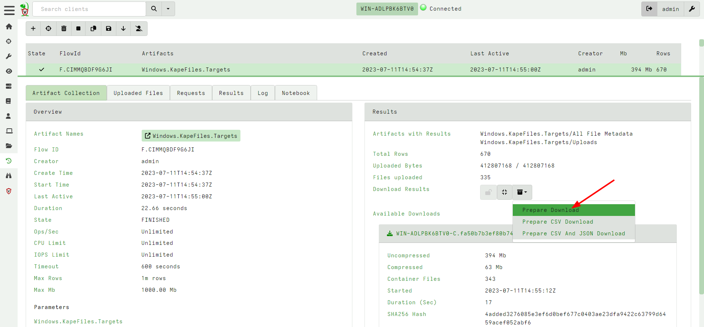
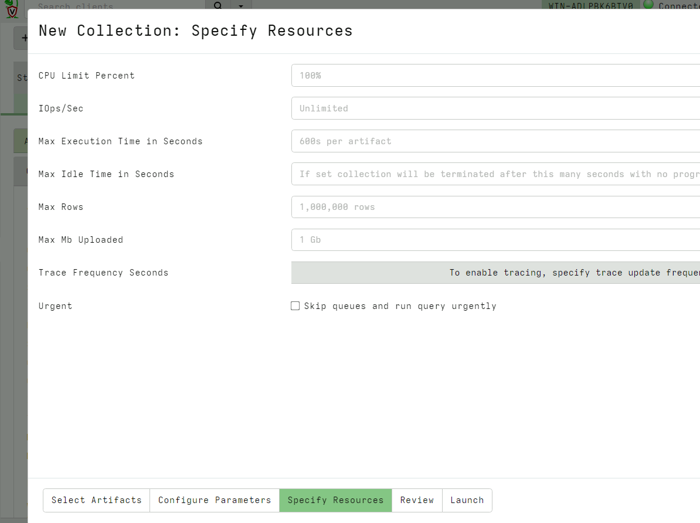

<!-- .slide: class="title" --> # Interactive triage collections ## Preserving and collecting data --- <!-- .slide: class="content small-font" --> ## Module overview * We previously saw how Velociraptor can be used to triage, collect indicators and remotely analyze a system. * Sometimes we can not deploy the Velociraptor client/server model but we still want to be able to collect artifacts. * Sometimes we need to rely on another agent to actually do the collection (either a human agent or another software). * This module shows how to prepare Velociraptor for local, interactive triage collection - simply collect the relevant artifacts and ship them out.
<!-- .slide: class="content " --> ## Collecting files * Being able to efficiently and quickly collect and preserve evidence is important: * Capture machine state at a point in time. * Collect files for further analysis by forensic tools. --- <!-- .slide: class="content " --> ## Windows.KapeFiles.Targets * This is a popular artifact for mass file collection. * It does no analysis but just collects a bunch of files. * Uses low level NTFS accessor * More "Traditional" DFIR. --- <!-- .slide: class="content small-font" --> ## Exercise: Use Windows.KapeFiles.Targets * Simply select the target to collect. * Many targets automatically include sub-targets. <img src="offline_kape_targets.png" style="height: 300px"/> --- <!-- .slide: class="content small-font" --> ## Exporting collections from GUI * You can use the GUI to export the collection 1. Can specify a password for export 2. Can re-import the collection into another server (archive)  --- <!-- .slide: class="content " --> ## Resource control * Collecting large artifacts can generate huge amount of data * Because Velociraptor is so fast and efficient it is easy to accidentally overwhelm networks * Math is a harsh mistress: * Collecting 100Mb from 10,000 endpoints = 1Tb * e.g. $MFT is usually around 300-400Mb --- <!-- .slide: class="full_screen_diagram" --> ### Velociraptor has your back! 
<!-- .slide: class="title" --> # Offline collections ## Digging deeper without a server --- <!-- .slide: class="content " --> ## Why Offline collection? * I want to collect artifacts from an endpoint * But Velociraptor is not installed on the endpoint! * Or the endpoint is inaccessible to the Velociraptor server (no egress, firewalls etc). But Velociraptor is just a VQL engine! It does not really need a server anyway --- <!-- .slide: class="content small-font" --> ## Velociraptor Artifacts * Velociraptor is essentially a VQL engine. * VQL queries are encapsulated inside an Artifact - a structured yaml file describing the query’s purpose and parameters. * We have seen how to collect artifacts remotely using the client/server model - however we can also collect artifacts locally --- <!-- .slide: class="content" --> ## Why Offline collection? * I want to collect artifacts from an endpoint * But Velociraptor is not installed on the endpoint! * Or the endpoint is inaccessible to the Velociraptor server (no egress, firewalls etc). * But Velociraptor is just a VQL engine! It does not really need a server anyway --- <!-- .slide: class="content" --> ## Create an offline collector <div class="container"> <div class="col">  </div> <div class="col"> #### Let's select two artifacts to collect: 1. Windows.KapeFiles.Targets * Select the Basic Collection to get many forensic artifacts 2. SQLiteHunter: https://github.com/Velocidex/SQLiteHunter </div> --- <!-- .slide: class="full_screen_diagram" --> ### Selecting the Windows.KapeFiles.Targets artifact  --- <!-- .slide: class="full_screen_diagram" --> ### Configuring the collector to encrypt output  --- <!-- .slide: class="full_screen_diagram" --> ### Downloading the prepared binary  --- <!-- .slide: class="content" --> ## Offline collector binaries * Preconfigured to collect the required artifacts * No user interaction needed - just run with no command line args * Prepare armoured Zip file with all the results in them --- <!-- .slide: class="full_screen_diagram" --> ### Acquire data!  --- <!-- .slide: class="content" --> ## Acquired file is encrypted * Due to limitations in the Zip format, file names can not be encrypted. * Therefore, Velociraptor creates a second protected Zip file inside the outer container. * Several encryption schemes supported: 1. Regular password 2. X509 - random password generated and encrypted with the server's certificate. 3. GPG - random password generated and encrypted with the GPG public key. --- <!-- .slide: class="content" --> ## Acquired file is encrypted  --- <!-- .slide: class="content" --> ## Importing into Velociraptor * Velociraptor can automatically decrypted offline containers when importing. * Use the Server.Utils.ImportCollection artifact to import collections * The server uses its private key to unlock the container automatically. * This preserves PII and confidential information in transit! --- <!-- .slide: class="full_screen_diagram" --> ### Import the collection into the Velociraptor server  --- <!-- .slide: class="full_screen_diagram" --> ### Inspect the import process  --- <!-- .slide: class="full_screen_diagram" --> ### Inspect the collected data  --- <!-- .slide: class="content " --> ## Protecting the collection file: Encryption * For added protection, add a password to the zip file * If we used a simple password it would be embedded in the collector * Use an X509 scheme to generate a random password. * Zip files do not password protect the directory listing - So Velociraptor creates a second zip file inside the password protected zip. --- <!-- .slide: class="content " --> ## Including third party binaries * Sometimes we want to collect the output from other third party executables. * Velociraptor can package dependent binaries together with the offline collector. * Velociraptor can append a zip file to the end of the binary and adjust PE headers to ensure it can be properly signed. --- <!-- .slide: class="content optional" data-background-color="antiquewhite" --> ## Take a memory image with winpmem * We will shell out to winpmem to acquire the image. We will bring winpmem embedded in the collector binary. --- <!-- .slide: class="content " --> ## Importing collections into the GUI * You can import an offline collection into the GUI using the `import_collection()` [VQL function](https://docs.velociraptor.app/vql_reference/server/import_collection/). * Requires the collection ZIP to already be present on the server. * Decrypts X509 encrypted collections automatically. --- <!-- .slide: class="content " --> ## Local collection considerations * Local collection can be done well without a server and permanent agent installed. * A disadvantage is that we do not get feedback of how the collection is going and how many resources are consumed. * We really need to plan ahead what we want to collect and it is more difficult to pivot and dig deeper in response to findings.
<!-- .slide: class="content" --> ## Uploading offline collections automatically * Offline collections tend to be very large. * This makes it difficult to transfer the collection back to the investigation team. * Velociraptor offers a number of automated uploading mechanisms: 1. SMB Upload (Windows Share) 2. S3 or GCP uploads 3. Azure storage service --- <!-- .slide: class="content" --> ## Configure SMB upload * Best used in an on-premises network * Can use any system on the network to receive the file. * Need to secure the upload directory: * Create a special uploader account * Only allow uploader account access to write files. * Prevent uploader account from reading files. --- <!-- .slide: class="content" --> ## Exercise: Preparing an SMB dropbox * Sometimes it is easiest to configure an SMB directory to receive the offline collector. * Follow the [instructions](https://docs.velociraptor.app/docs/offline_triage/remote_uploads/#smb-share) to configure an SMB drop box folder. * Create offline collectors to upload to the folder. --- <!-- .slide: class="content small-font" --> ## Step 1: Creating service account * Need to create a new local user account to authenticate to the server.  --- <!-- .slide: class="content small-font" --> ## Step 2: Share directory to new user * Create a directory on the server to accept uploads * Share the directory <img src="sharing_directory.png" class="mid-height"> --- <!-- .slide: class="content small-font" --> ## Step 3: Adjust ACLs * Ensure the service account has limited permission on the NTFS level <img src="directory_permissions.png" class="mid-height"> --- <!-- .slide: class="content small-font" --> ## Step 4: Test ACLs using VQL * You can use VQL from the server notebook to ensure the uploader account 1. Can upload a test file to the SMB share 2. Can not list or read any files on the SMB share. ```sql LET SMB_CREDENTIALS <= dict(`192.168.1.112`="uploader:test!password") SELECT upload_smb(accessor="data", file="Hello world", name="hello.txt", server_address="//192.168.1.112/uploads") FROM scope() SELECT * FROM glob(globs="*", root="//192.168.1.112/uploads", accessor="smb") ``` --- <!-- .slide: class="content small-font" --> ## Step 5: Creating the SMB collector * Once we confirm the SMB share is properly configured, we can create the collector. <img src="creating_smb_collector.png" class="mid-height"> --- <!-- .slide: class="title optional" data-background-color="antiquewhite" --> # Collecting to AWS Buckets --- <!-- .slide: class="content optional small-font" data-background-color="antiquewhite" --> ## Bucket credentials * On AWS bucket access is given by user policies * Basic entities: 1. A Bucket - contains upload collections 2. A User - a service account that assumes an identity. * The user has credentials (Key and Secret) * One or more policy objects associated with the user. 3. A Policy * Specifies permissions to various actions on APIs. --- <!-- .slide: class="content optional small-font" data-background-color="antiquewhite" --> ## Creating a bucket * Using the AWS console create a bucket with default permissions * The most important parameters are the region and the bucket name  --- <!-- .slide: class="content optional small-font" data-background-color="antiquewhite" --> ## Creating a User * In the IAM section of the console create a User account * Create a dedicated user account that will only be allowed to upload.  --- <!-- .slide: class="content optional small-font" data-background-color="antiquewhite" --> ## Creating security credentials * Since this account needs to log in automatically we need to get an access key for it. * Under the `Security credentials` tab find the `Access Keys` section and create a new key. * Select `Application running outside AWS` as the type of the key. * You can now retrieve the key from the console. Make sure to record it because it wont be shown again. --- <!-- .slide: class="full_screen_diagram small-font" data-background-color="antiquewhite" --> ### Creating security credentials  --- <!-- .slide: class="content optional small-font" data-background-color="antiquewhite" --> ## Creating a policy * You can attach the policy JSON object to the user account. * The only permission needed is the `PutObjet` permission on the bucket resource. ```json { "Version": "2012-10-17", "Statement": [ { "Sid": "VisualEditor0", "Effect": "Allow", "Action": "s3:PutObject", "Resource": "arn:aws:s3:::upload.velocidex.com/*" } ] } ``` --- <!-- .slide: class="content optional small-font" data-background-color="antiquewhite" --> ## Testing the upload credentials * Gather the following pieces of information 1. Key ID 2. Key Secret 3. Bucket name and region * Add these to the collector configuration. --- <!-- .slide: class="full_screen_diagram small-font" data-background-color="antiquewhite" --> ## Testing the upload credentials  --- <!-- .slide: class="content optional" data-background-color="antiquewhite" --> ## Viewing the contents of the bucket * While the uploader has no credentials we can create a second service account with full access to the bucket. * This allows the server to view files in the bucket as soon as they are uploaded! * We will use this in the next section to automate post processing. --- <!-- .slide: class="content optional small-font" data-background-color="antiquewhite" --> ## Full access policy * To give the service account full access use the following policy ```json { "Version": "2012-10-17", "Statement": [ { "Sid": "VisualEditor1", "Effect": "Allow", "Action": "s3:*", "Resource": [ "arn:aws:s3:::upload.velocidex.com/*", "arn:aws:s3:::upload.velocidex.com" ] } ] } ``` --- <!-- .slide: class="content optional small-font" data-background-color="antiquewhite" --> ## Testing Full access policy * Using the credentials for the full access s3 service account we can read the bucket. ```sql LET S3_CREDENTIALS<=dict( region="ap-southeast-2", credentials_key='CRED_KEY', credentials_secret='CRED_SECRET') SELECT * FROM glob(accessor="s3", globs="**", root="/upload.velocidex.com/") ```
<!-- .slide: class="content small-font" --> ## Review And Summary * Collecting data from the endpoint is a balancing act: 1. Collecting too much data makes it difficult to post process 2. Collecting too little means frequent re-collections and pivoting. * In Client/Server model it is easy to hunt for new data quickly * It is better to be more targeted and answer more specific questions * Limit the total data returned * We saw to to collect uploads using SMB and S3 * More methods are available (SFTP, Azure etc). * The basic principal is the same: Lock down the service account so it can only upload --- <!-- .slide: class="content" --> ## Local collection considerations * Local collection can be done well without a server and permanent agent installed. * A disadvantage is that we do not get feedback of how the collection is going and how many resources are consumed. * We really need to plan ahead what we want to collect and it is more difficult to pivot and dig deeper in response to findings.